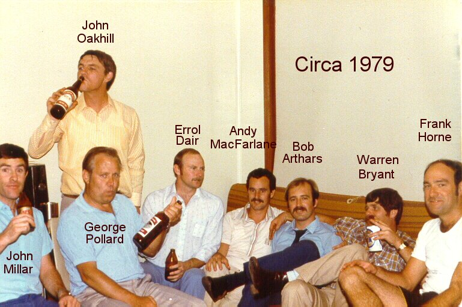

1987 Reunion, RAAF Laverton Golf Club
Photo courtesy Jeff Schoer
If anyone has better copies of these photos, please contact webmaster@raaftelstechs.org.au so they can be rescanned and uploaded for better viewing.
1987 Reunion, RAAF Laverton Golf Club
Photo courtesy Jeff Schoer
Click on the thumbnails to see a full sized version
If anyone can identify people in these photos, please forward those details to webmaster@raaftelstechs.org.au so the captions can be updated. Thank you.
10KW26 Course May 1968 - Photo courtesy Kel Reynolds - Who is the person between Kel Reynolds and Baz Ryan?

Rough lot this! Photo courtesy Bob Arthars.
Back Row L-R Philip 'Tubby' Hughson, Bob Yetman, Brian Paterson, George Mellick, Dennis Horton, Brian Flux
Front Row L-R Leon Megaw, Peter McAvaney, Ian 'Rabbit' Jones
Sgts Mess Laverton circa 1978
Photo courtesy Brian Flux.

MTU (Frognal) Technical staff - June 1975
Photo courtesy Les Coxhedge

44 RadMech Ground Telegraph Course - April 1964 - Feb 1965. Fill in the blanks anyone?
Photo courtesy Les Goxhedge.

RAAFTUS Rabbits
Back Row: Andy MacFarlane, George 'Bucket Mouth' Miller, FlgOff ?, John Millar
Front Row: Neil Rooney, ?, Gary Richardson
Photo courtesy Andy MacFarlane.

Minicomputer Course RADS 1976
L-R Trevor Longmore, Peter Outtrim, Brian Flux, Ray Hannah, Rod Kime
Photo courtest Ray Hannah
Before the 'Frontal Lobotomy' 29 November 1989
Back Row:John Speirings, Frank Osborne, John Power, Cameron McMorrow, Rudi Edwards, Drew Inness
Front Row: 'Clarky' Clark, Ian Hall.
After the 'Frontal Lobotomy' 30 November 1989
Another one of those notorious reunions - 89-90? and bigger this time
Photo courtesy Al Pretty
To be in those tropical climes, surrounded by Model 15s
Photo courtesy Al Pretty.
A real rogues gallery - no guessing this time
Back ROW L-R Peter 'Blitz' Kreig, Hans-Robert 'Fritz' van Amstel, Ted Hughes (WOFF), Bob (Scrubber) Scrivener (WGCDR), Ray 'Spider' Worner
FRONT ROW L-R Tony 'Ant' Kociuba, Michael 'Mick' Murphy, Noel 'Didjagetyorendin?' Quarrel (Ex WOFF), Dave '?' Webber, Laurie 'Tippo' Tippins
Photo courtesy 'Fritz' van Amstel.
Up to date equipment and so are the uniforms(Ballarat late 50s).
Photo courtesy Ray 'R.G.' Thompson.
Head Honchos at Frognall - June 1975
Photo courtesy Ray 'R.G. Thompson.
Having a couple of convivials - Seagrams included
Jack Beggs, Brian 'Lofty' Carthew, and the late Bill Wright - Ted Rippon's Auburn Hotel - mid 50s
Photo courtesy Ray 'R.G.' Thompson.
The 1AD crew - mid 80s
Standing left to right - Blue Rhodes, Dave Zilm, Geoff Toulson, Tony Reeve, Steve Swinbourn, Graeme Brownrigg, Doug Higginson, Graham (Bear) Kerr,
Jon Thompson, Chris Lawrence, Neil Hunter, Keith Gentle, Mark Thomas
Kneeling - Andrew Hart, Ian Patman, Pete McGranahan, Bill Coyer
Photo courtesy Tony Reeve.
2SQN Comunications Centre Phan Rang 1968/69
Standing left to right - Kev McGinley, Les Ramsey, Al Moorcroft, Gary Good, Al Alcock, Bob Chappell, Bruce (Tex) Writer, John (Shorty) Hodges
Front Row left to right - Ron Fyfield, Gerry Tipping (RadO), Blue Taylor, Nev Davis (Groundie)
Photo courtesy Bruce (Tex) Writer.
Headquarters Support Command Lapstone (Early 1950s)
Photo courtesy Ron Fryer.
Rear of Headquarters Support Command Lapstone (Early 1950s) showing the Officers Mess and the legendary 'Yum Yum' tree (left)
Photo courtesy Ron Fryer.
Original guard house Headquarters Support Command Lapstone (Early 1950s) Great Western Highway in the background
Photo courtesy Ron Fryer.
Telstechs outside workshop - Headquarters Support Command Lapstone (Early 1950s) Note the swimming gear
Photo courtesy Ron Fryer.
Radio Mechanic (Air) Course Ballarat 1949
Photo courtesy Ron Fryer.
Ron Fryers Leave Pass (Outside)
Photo Courtesy Ron Fryer.
Ron Fryers Leave Pass (Inside).
Roy and Sharon Sharpe
Bob May in P3B cockpit testing the comms
Bob May at Nimitz Beach
L - R: Tim Gallagher (Elec Fitter), Paul Bowen (RadTechA), Carl Smith (Commsop), Bob May
Djinnang get-together May 2006
Techs and Operators Darwin 80s
Techs Darwin 80s
3TTC 65/66
1TMT Magnetic Island 2017
5TMT Graduation March Past 8 Sep 1970 - WgCdr Starkie taking the salute
Marker is Graham Sparrow
Photo courtesy Neal Miller
Frognall 1972
Photo courtesy Neal Miller
1978, from the Cairns Post 11 May 1978
Photo courtesy Bob May
Barbers Point Naval Air Station Hawaii during RIMPAC 78
Photo courtesy Bob May
Date unknown
Photo courtesy Bob May
Back Row (L to R) - Paul Egan, Norv Simpson, Bob Daunt, Ron Faulkner, Trevor Horne, Alan Worthington, John Carruthers, Bob Laxton, Brian Flux, Dennis Greig, Brian Constable
Front Row (L to R) - Russ Walker, Graham (Blue) Cotterell, Les Coxhedge, Roy Smeaton
Photo courtesy Graham (Blue) Cotterell
Photo courtesy Mal Wilson
Photo courtesy Mal Wilson
Photo courtesy Roger Davis
Photo courtesy Mick Lawson